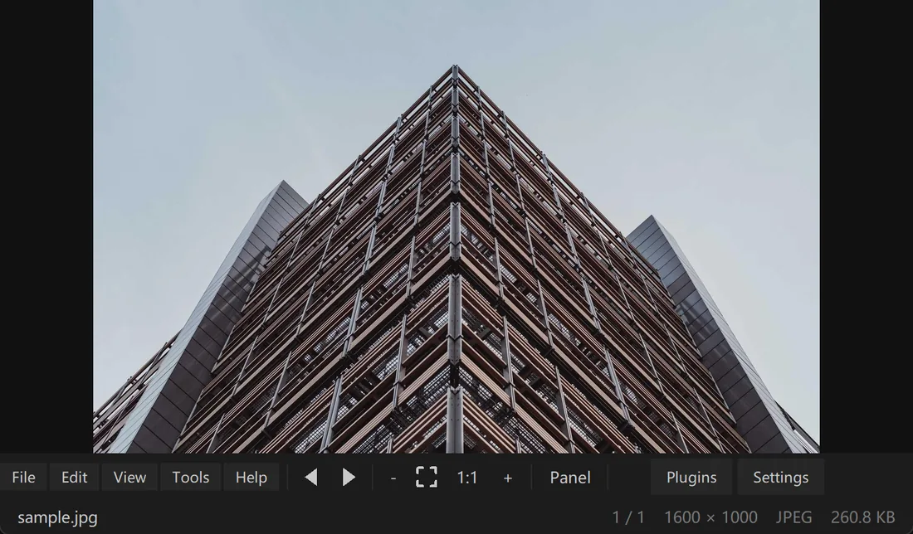
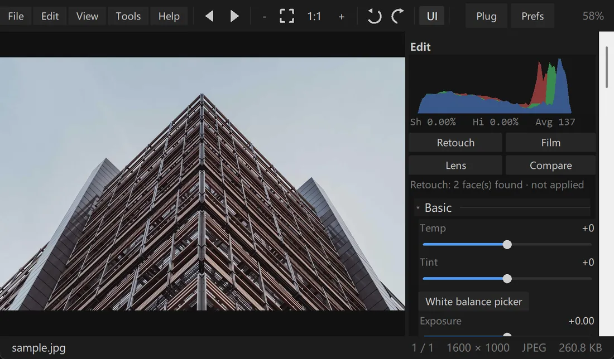
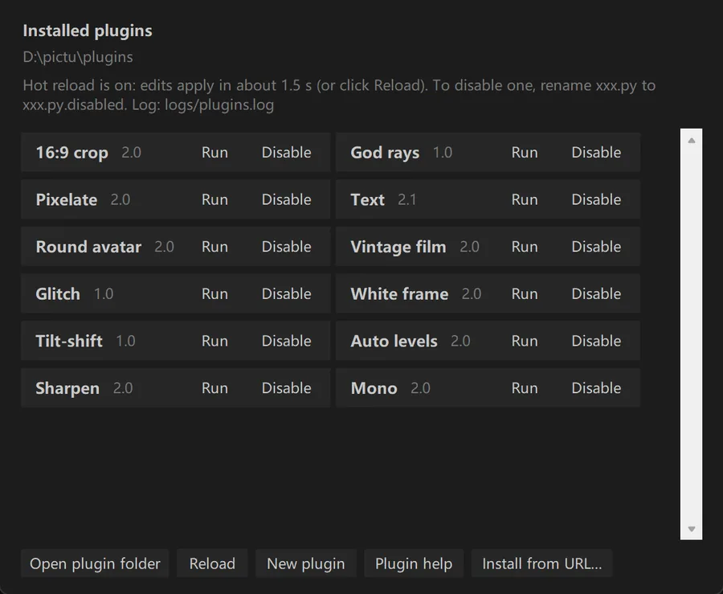
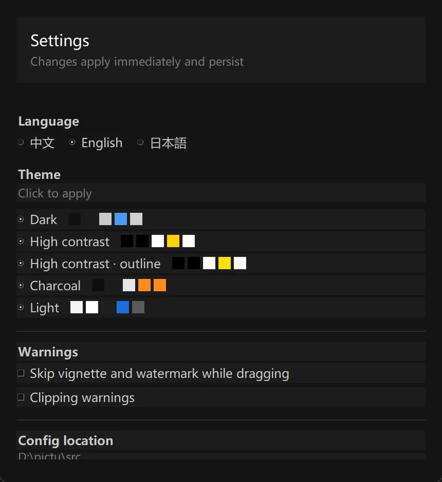

Opens fast, switches fast, grades accurately. Supports Nikon NEF and common formats, with curves, HSL and local filters built in — extensible with plugins.
All downloads Windows full40.1 MB Windows viewer40.0 MB macOS227 KB Linux227 KB




These are actual screenshots generated by the release script (tools/uishot.py), not mockups.

 Graded
Original
Graded
Original
Drag the circle left or right to compare the same photo before and after exposure, contrast, vibrance, temperature and vignette. Both sides come from Prism's own pipeline, not a mockup.
Sample photo from Lorem Picsum (images from Unsplash, free to use), for demonstrating color grading only.


| Instant open | Renders only the visible area: a 40 MP photo appears in under a second |
| Pro grading | Tone curves, 8-band HSL, color grading — preview and export match pixel for pixel |
| Lens / film / portrait | Lens distortion correction · film looks · portrait retouching (pure algorithms, no models) |
| Local adjustments | Radial and gradient filters, plus automatic subject and high-contrast selections |
| Plugin extension | One .py file is a plugin; 12 ship built in with adjustable parameters — drop it into plugins/ |
Pure algorithms: no model files, no network, no uploads.
| Skin smoothing | Frequency separation: removes low-frequency blotches, keeps pores |
| Brighten / even skin | Brightens skin areas; median filter removes small spots |
| Blemish removal | Background subtraction finds dark spots and fills them; spot size adjustable |
| Dark circles | Lifts only shadows under the eyes and cuts blue to neutralise purple |
| Teeth / lips | Separates teeth and lips by brightness and red-green difference |
| Slim face / enlarge eyes | Inverse-mapping resampling with automatic eye detection |
| Natural look | All zero |
| Natural | Smooth 35 · blemish 25 · teeth 20 |
| Portrait | Smooth 60 · blemish 50 · eyes 35 · slim 15 |
| Influencer | Smooth 85 · blemish 70 · eyes 60 · slim 45 |
| Where | Tools → Portrait retouching… |
| Before/after | Hold B to temporarily disable |
| Status line | The panel header shows faces found, current values and whether it is skipped |
| Guards | Skips tiny, flat, monochrome or extreme-ratio images |
Full parameter table and implementation notes in README under “Portrait retouching”.
A plugin is just a Python file. Drop it into plugins/ next to the program and hit Rescan — no registration, no restart.
| Write a plugin | Add a .py that defines run(img) |
| Input | img is a PIL.Image (RGB) with all adjustments applied |
| Output | Return a new PIL.Image, or None to skip |
| Metadata | PLUGIN_NAME / PLUGIN_DESC / PLUGIN_VERSION / PLUGIN_AUTHOR |
| Getting started | Use Plugins → New plugin to generate an annotated template |
| Windows | |
| 1 | Download Prism-Setup-9.11.1.exe and double-click it |
| 2 | Choose install mode (per-user / extract in place) and location |
| 3 | Optionally create Start-menu and desktop shortcuts; it launches when done |
| macOS | |
| 1 | Install Python 3:python.org |
| 2 | Unzip, then double-click “启动 Prism.command” |
| 3 | If macOS cannot verify the developer: right-click → Open, or allow it under Privacy & Security |
| Linux | |
| 1 | Install dependencies:sudo apt install python3-tk python3-pil |
| 2 | chmod +x prism.sh && ./prism.sh |
| 3 | Add to the app menu: put the folder in /opt/Prism, then copy Prism.desktop to /usr/share/applications/ |
| ← / → | Previous / next |
| + / − / 1 | Zoom in / out / 100% |
| F | Fit to window |
| R / Shift+R | Rotate clockwise / counter-clockwise |
| E | Show or hide the editing panel |
| C | Crop |
| G | Grid view |
| Ctrl+Z / Ctrl+Y | Undo / redo |
| Esc | Leave the current mode (does not quit) |
| Where | In the program folder: plugins/ (created on first run) |
| How to write | A single .py file defining run(img); optionally declare PARAMS to get sliders automatically |
| Install | Drop the .py into plugins/, or use Plugins → Install from URL… with a download URL (SHA-256 optional) |
| Plugin marketplace | Official catalog index.json: browse, see installed/update status, install in one click; uses cache offline |
| Parameters | Each plugin's parameters are remembered and restored the next time you run it |
| Docs | Plugin guide · Plugin API |
| How it works | Toolbar Plugins → Run; tweak parameters in the result window and save as |
| How many built in | 12: Pixelate, Vintage film, Round avatar, White frame, Sharpen, Mono, Auto levels, Text, 16:9 crop, Tilt-shift, God rays, Glitch |
The installer is unsigned. Click More info → Run anyway. The app does not use the network and needs no admin rights.
First run in Terminal: chmod +x "启动 Prism.command"; if the developer is unverified, right-click → Open.
Tk is not installed:sudo apt install python3-tk (on Fedora use python3-tkinter).
The viewer has no editing panel — only browsing, zoom, rotation, slideshow, filmstrip and grid, in a smaller package. Format support and rendering speed are identical.
F11 fullscreen renders incorrectly on some machines, so Prism uses a compatible mode: borderless maximise with Esc to leave.
Full Markdown docs: README.md。
| Windows | |
| Full installer | 39.8 MB · with editing panel and plugins |
| Viewer only (installer) | 39.9 MB · same setup as full, includes Start-menu and desktop shortcuts |
| Viewer only (portable) | 29.9 MB · unzip and run, no registry writes |
| macOS / Linux | |
| macOS package | 104 KB · run from source, needs Python 3 + Pillow |
| Linux package | 105 KB · includes .desktop, needs python3-tk |
| Requirements (Windows) | |
| OS | Windows 10 / 11 (64-bit) |
| Runtime | None — works out of the box |
| Disk usage | About 75 MB |
| Privileges | Standard user, no admin |
| Install steps | Double-click → choose mode and location → launch |
Three things before you download
1. The installer is unsigned, so Windows may show SmartScreen — see “Safe bypass” below.
2. Fullscreen is a compatible mode (borderless maximise, Esc to exit), not system fullscreen.
3. macOS and Linux are source packages — no prebuilt .app or AppImage.
Portable：Prism-Portable-9.11.1.zip (full version, unzip and run — no registry, no Start-menu entry)
The installer is unsigned, so Windows shows “Windows protected your PC”. Verify the file first, then decide:
Get-FileHash .\Prism-Setup-9.11.1.exe -Algorithm SHA256If you prefer not to run unsigned binaries, use the portable zip above or run from source:
python src/Prism.pyw。
| Site certificate | |
| Protocol | HTTPS (redirect enforced, no plaintext) |
| Subject | *.github.io |
| Issuer | Let's Encrypt (issued and renewed automatically by GitHub Pages) |
| Valid until | 2026-12-30 |
| Installer checksum | |
| File | Prism-Setup-9.11.1.exe |
| SHA-256 | 1B62FB8D815FA05BC0A017F76331B31817C31E2AA931BDCEDE5D9A2892B6490A |
After downloading, compare with certutil -hashfile FILE SHA256 (Windows) or shasum -a 256 FILE (macOS/Linux).
 Prism9.11.1
Prism9.11.1